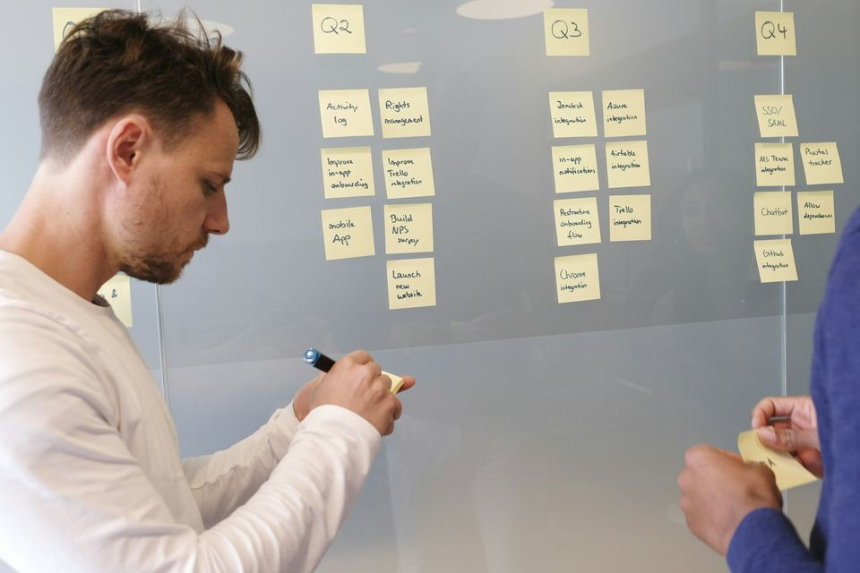
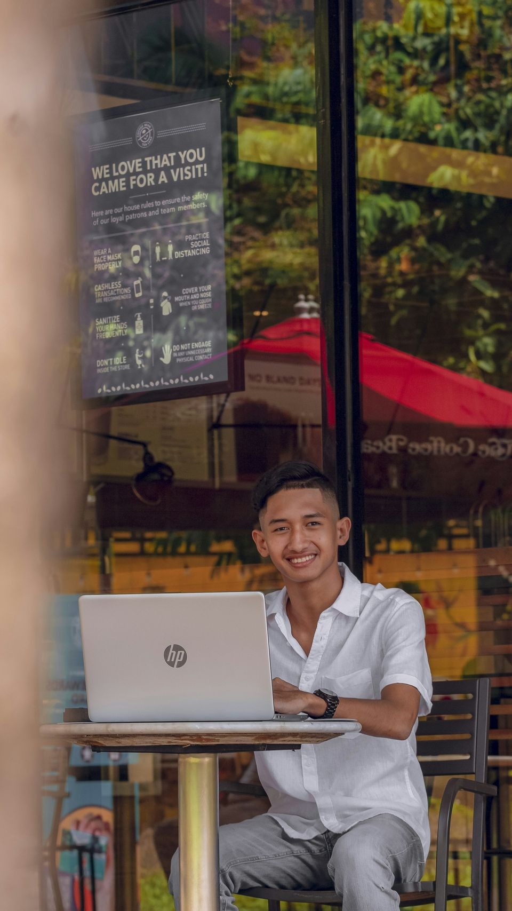
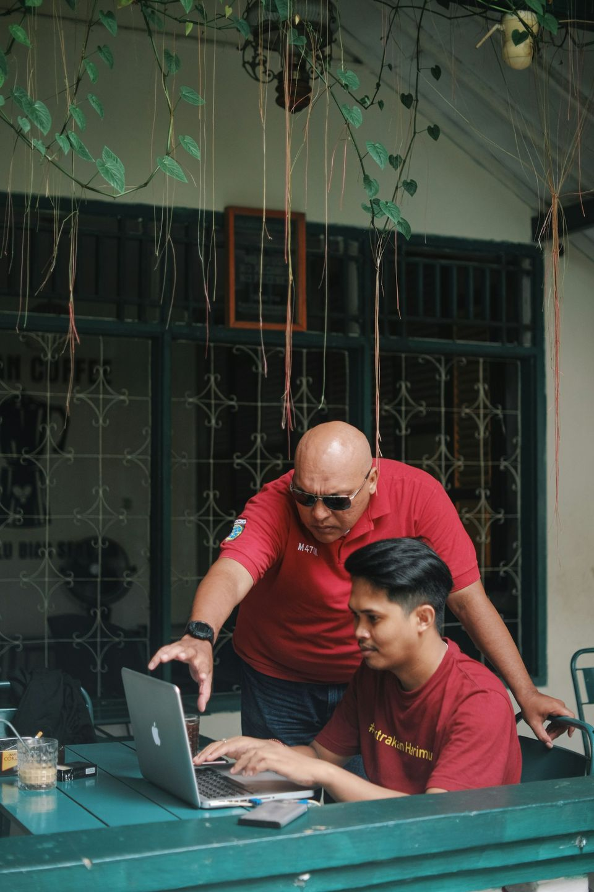

Implement.
Frameworks, workflows, templates and a structured program for putting what you've learned to work, starting this week.
On this page


Featured framework
AI Opportunity Map
Identify repetitive work, high-friction processes, and practical areas where AI can create leverage.
- List the work you repeatEverything you do weekly: reports, emails, research, follow-ups.
- Mark the frictionWhere does work wait, get copied by hand, or go back and forth?
- Pick one place to startChoose the task where AI saves the most time with the least risk, and test it.
Workflow
From manual research to an AI-assisted research workflow.
- ResearchGather sources with AI search and summaries, and keep links to the originals.
- OrganizeGroup findings by theme so nothing important gets lost.
- AnalyzeAsk AI to compare, spot patterns and list open questions.
- DraftTurn the analysis into a first draft in your own structure.
- ReviewCheck facts and sources yourself. This step stays human.
Where it helps
Market scans, competitor notes, proposal research, briefing documents: any task where you read a lot to write a little.
Where to be careful
AI can state things confidently that aren't true. Keep sources attached at every step, and never skip the review.
Templates & tools
Copy it, adapt it, use it.
-
Guide
Prompt Starter Kit & Tools Guide
Prompts to adapt for writing, research and planning, plus a plain-language guide to choosing tools.
Get it -
Worksheet
AI Opportunity Map
The three-step worksheet for finding where AI can help in your own work.
Get it -
Checklist
AI-Assisted Research Workflow
The five steps on one page, with the review questions to ask every time.
Get it -
Plan · Program
30-Day AI Workforce Action Plan
Built with you during the AI-Ready Professional track of the AI Workforce Accelerator.
See the track
AI tools
AI in real hands.
-
Choosing tools
Start with the AI already inside the tools you use every day, like email, documents and spreadsheets. Add specialist tools only when a real task needs them.
Get the Tools Guide -
Faith AI
The implementation side of the Faith Works ecosystem: the AI Workforce Accelerator, one-to-one coaching, and help building your first priority AI solution.
See the program
Program
AI Workforce Accelerator
Practical learning for Filipino professionals, business owners, leaders, and teams. Four tracks, each ending in something you can use.
Register interest
Track 01
AI-Ready Professional
A working foundation: what today's AI tools can do, how to prompt them well, and how to use them responsibly at work.
- Core tools and prompting
- Safe, responsible use at work
- Your first AI-assisted tasks
You leave with
30-Day AI Workforce Action Plan
Track 02
AI-Powered Daily Work
AI inside the work you already do every day: writing, research, reporting and communication.
- Map your recurring tasks
- Build repeatable AI-assisted workflows
- Refine them on real work
You leave with
An AI-assisted workflow portfolio
Track 03
Implementation & Leadership
For people leading AI adoption in a team or business: where it fits, how to roll it out, and how to bring people with you.
- Prioritize use cases with the AI Opportunity Map
- Plan the roll-out, with review steps built in
- Communicate the change to your team
You leave with
An implementation portfolio + 90-day roadmap
Track 04
Personalized 1:1 Coaching
One-to-one guidance on your role or business, focused on the one problem that matters most right now.
- A session plan built around your goals
- Hands-on help building and testing
- Follow-up to refine the result
You leave with
One priority AI solution
Get the resources
Tell us where to send it.
Pick a resource and leave your email. We'll send it over, along with occasional updates on workshops and new resources.